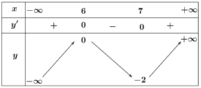
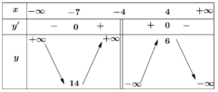
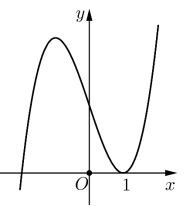
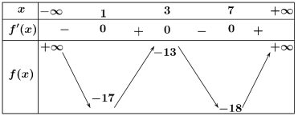
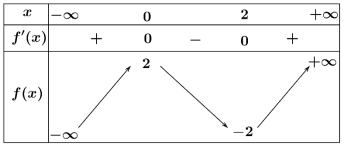
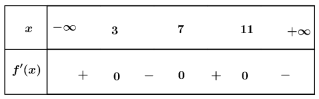
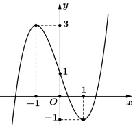

Thời gian làm bài: 90 phút
Lời giải Ta có: ${y}'=-\frac{{{x}^{2}}-22x+120}{{{\left(x-11 \right)}^{2}}}=0\Leftrightarrow x=10,x=12$. Hàm số đồng biến trên các khoảng $\left(-\infty ;10 \right)$ và $\left(12;+\infty \right)$. Hàm số nghịch biến trên các khoảng $\left(10;11 \right)$ và $\left(11;12 \right)$. Do đó hàm số đã cho nghịch biến trên khoảng $\left(-\infty ;6 \right)$.
Lời giải Vận tốc của vật là:$v\left(t \right)={{\left(x\left(t \right) \right)}^{\prime }}={{\left(2\sin \left(\frac{\pi }{2}t-\frac{\pi }{3} \right) \right)}^{\prime }}=\pi \cos \left(\frac{\pi }{2}t-\frac{\pi }{3} \right).$ Gia tốc của chuyển động là $a\left(t \right)={{\left(v\left(t \right) \right)}^{\prime }}={{\left(\pi \cos \left(\frac{\pi }{2}t-\frac{\pi }{3} \right) \right)}^{\prime }}=-\frac{{{\pi }^{2}}}{2}\sin \left(\frac{\pi }{2}t-\frac{\pi }{3} \right).$ $2\le t\le 3\Rightarrow \frac{\pi }{6}\le \frac{\pi }{2}t-\frac{\pi }{3}\le \frac{7\pi }{6}$. Khi đó $\sin \left(\frac{\pi }{2}t-\frac{\pi }{3} \right)$ dương khi $\frac{\pi }{6}\le \frac{\pi }{2}t-\frac{\pi }{3}<\pi $ và $\sin \left(\frac{\pi }{2}t-\frac{\pi }{3} \right)$ âm khi $\pi <\frac{\pi }{2}t-\frac{\pi }{3}\le \frac{7\pi }{6}$ Do đó $a\left(t \right)<0$ khi $\frac{\pi }{6}\le \frac{\pi }{2}t-\frac{\pi }{3}<\pi $ và $a\left(t \right)>0$ khi $\pi <\frac{\pi }{2}t-\frac{\pi }{3}\le \frac{7\pi }{6}$. Vậy lúc đầu vận tốc giảm, sau đó vận tốc tăng.
Lời giải Tập xác định: ${D=\mathbb{R}}$. Tính đạo hàm ${y=\sqrt[3]{{{x}^{2}}}\Rightarrow {y}'=\frac{2}{3\sqrt[3]{x}},\left(x\ne 0 \right)}$ Xét dấu ${{y}'}$ ta có: ${{y}'>0}$với ${x\in \left(0;+\infty \right)}$ và ${{y}'<0}$ với ${x\in \left(-\infty ;0 \right)}$. Vậy hàm số có 1 cực trị.
Lời giải Hàm số xác định trên $\mathbb{R}$. Ta có: ${f}'\left(x \right)=\frac{16-2{{x}^{2}}}{{{\left({{x}^{2}}+8 \right)}^{2}}}=0\Leftrightarrow x=-2\sqrt{2},x=2\sqrt{2}$. Hàm số đã cho đồng biến trên khoảng $\left(-2\sqrt{2};2\sqrt{2} \right)$, nghịch biến trên các khoảng ${\left(-\infty ;-2\sqrt{2} \right)}$ và $\left(2\sqrt{2};+\infty \right)$. Do đó hàm số nghịch biến trên khoảng $\left(-\infty ;-2\sqrt{2} \right)$.
Lời giải Do $v\left(t \right)={s}'\left(t \right)=8-4t=0\Leftrightarrow 8-4t=0\Leftrightarrow t=2$. Ta có bảng biến thiên: Vậy tại thời điểm 2 giây vật cách mốc tính quãng đường khoảng lớn nhất.
Lời giải Ta có: ${y}'=\frac{2\left({{x}^{2}}-2x \right)}{{{\left(x-1 \right)}^{2}}}=0\Leftrightarrow x=0,x=2$. Hàm số đồng biến trên các khoảng $\left(-\infty ;0 \right)$ và $\left(2;+\infty \right)$. Hàm số nghịch biến trên các khoảng $\left(0;1 \right)$ và $\left(1;2 \right)$. Do đó đạt cực tiểu tại $x=2$. Giá trị cực tiểu là $f\left(2 \right)=6$.
Lời giải Ta có: ${f}'\left(x \right)=-{{x}^{2}}+2x=0\Leftrightarrow x=0,x=2$. Hàm số đồng biến trên khoảng $\left(0;2 \right)$. Hàm số nghịch biến trên các khoảng $\left(-\infty ;0 \right)$ và $\left(2;+\infty \right)$.
Lời giải Ta có: ${f}'\left(x \right)=3{{x}^{2}}-21x+36=0\Leftrightarrow x=3$ hoặc $x=4$. Lập bảng biến thiên. Điểm cực tiểu của hàm số là $x=4$.

Lời giải Điểm cực đại của hàm số $y=f\left(x \right)$ là $x=6$.
Lời giải Ta có: ${y}'=\frac{-58}{{{\left(5x-9 \right)}^{2}}}<0,\forall x\ne \frac{9}{5}$ nên hàm số đã cho nghịch biến trên khoảng $\left(2;+\infty \right)$.

Lời giải Ta có: ${y}'=0\Leftrightarrow x=-7,x=4$. Hàm số đồng biến trên các khoảng $\left(-\infty ;-7 \right)$ và $\left(4;+\infty \right)$. Hàm số nghịch biến trên các khoảng $\left(-7;-4 \right)$ và $\left(-4;4 \right)$. Do đó hàm số đã cho đồng biến trên khoảng $\left(-7;-4 \right)$.

Lời giải Hàm số đã cho đồng biến trên khoảng $\left(1;+\infty \right)$.

Lời giải: Lời giảiĐúng: Dựa vào bảng xét dấu ta có hàm số $y=f\left(x \right)$ đồng biến trên các khoảng $\left(1;3 \right)$ và $\left(7;+\infty \right)$.Đúng: $f\left(1 \right) Do đó:${f}'\left(3x-1 \right)=0\Leftrightarrow 3x-1=1$ hoặc $3x-1=3$ hoặc $3x-1=7$. Suy ra $x=\frac{2}{3}$ hoặc $x=\frac{4}{3}$ hoặc $x=\frac{8}{3}$.

Lời giải: Lời giảiĐúng: Hàm số $y=f\left(x \right)$ đồng biến trên khoảng $\left(-\infty ;0 \right)$ và $\left(2;+\infty \right)$.Sai: Ta có: ${g}'\left(x \right)=2-3{f}'(x)>0,\forall x\in \left(0;2 \right)$ suy ra hàm số $g\left(x \right)=2x-3f\left(x \right)$ đồng biến trên khoảng $\left(0;2 \right)$.Sai: Ta có hàm số $y=f(x)$ nghịch biến trên khoảng $\left(0;2 \right)$. Mà $0\le {{\sin }^{2}}x\le 1,\forall x\in \mathbb{R}\Rightarrow 0\le {{\sin }^{2}}x<\frac{3}{2},\forall x\in \mathbb{R}\Rightarrow f\left({{\sin }^{2}}x \right)>f\left(\frac{3}{2} \right)$.Sai: ${y}'={{\left(2-3x \right)}^{\prime }}.{f}'\left(2-3x \right)=-3{f}'\left(2-3x \right)$. Hàm số $y=f\left(2-3x \right)$ nghịch biến ${y}'=-3{f}'(2-3x)<0\Leftrightarrow {f}'\left(2-3x \right)>0\Leftrightarrow \left[ \begin{align} & 2-3x<0\\ & 2-3x>2\\ \end{align} \right.$ $\Leftrightarrow \left[ \begin{align} & x>\frac{2}{3}\\ & x<0\\ \end{align} \right.\Rightarrow $ Hàm số $y=f\left(2-3x \right)$ nghịch biến trên các khoảng $\left(-\infty ;0 \right),\left(\frac{2}{3};+\infty \right)$.

Lời giải: Lời giảiĐúng: Dựa vào bảng biến thiên, hàm số đã cho đạt cực tiểu tại điểm $x=7$.Sai: Dựa vào bảng biến thiên, hàm số đã cho có giá trị cực đại là $f\left(3 \right)$ hoặc $f\left(11 \right)$Sai: Dựa vào bảng xét dấu ta có hàm số $y=f\left(x \right)$ đồng biến trên các khoảng $\left(-\infty ;3 \right)$ và $\left(7;11 \right)$.Đúng: Hàm số đồng biến trên khoảng $\left(7;+\infty \right)$.
Lời giải: Lời giải Tập xác định $D=\mathbb{R}\backslash \left\{ 1 \right\}$. Ta có ${y}'=\frac{3}{{{\left(-x+1 \right)}^{2}}}>0$với mọi $x\ne 1$. Hàm số đồng biến trên các khoảng$\left(-\infty ;\,\,1 \right)$ và $\left(1;\,\,+\infty \right)$.Đúng: Hàm số đồng biến trên khoảng$\left(-\infty ;\,\,1 \right)$Sai: Hàm số nghịch biến trên khoảng $\left(2;\,\,+\infty \right)$Đúng: Hàm số đồng biến trên khoảng $\left(2023;2026 \right)$Sai: Hàm số đồng biến trên $\mathbb{R}\backslash \left\{ 1 \right\}$
Lời giải: Lời giải Khi có thêm $x$ khách tham gia tua số khách thực tế là $30+x$, số tiền mỗi khách phải trả cho tua là $5\text{ }000-ax$ (nghìn đồng). Doanh thu của tua là $T\left(x \right)=\left(30+x \right)\left(5\text{ }000-ax \right)$. $T\left(x \right)=-a{{x}^{2}}+\left(5\text{ }000-30a \right)x+150\text{ }000$. Doanh thu tăng lên theo số khách nhận thêm khi $T\left(x \right)$ đồng biến trong khoảng $\left(0;8 \right]$ Do đó có $T'\left(x \right)=-2ax+\left(5\text{ }000-30a \right)\ge 0\Leftrightarrow x\le \frac{2500}{a}-15$. Để doanh thu tăng theo số khách nhận thêm và không quá 8 người thì: $8\le \frac{2500}{a}-15<9\Leftrightarrow 23\le \frac{2500}{a}<24\Leftrightarrow \frac{2500}{23}\ge a>\frac{2500}{23}$. Vậy số tiền có thể giảm nhiều nhất cho khách là 109 nghìn.
Lời giải: Lời giải Ta có: $y=\frac{mx-3}{2x-m}\Rightarrow {y}'=\frac{-{{m}^{2}}+6}{{{\left(2x-m \right)}^{2}}}$ Theo yêu cầu bài toán: ${y}'>0,\forall x\in D$$\Leftrightarrow -{{m}^{2}}+6>0$$\Leftrightarrow -\sqrt{6} Mà $m\in Z\Rightarrow m\in \left\{ -5;-4;.....4,5 \right\}$ suy ra có 11 giá trị thõa mãn

Lời giải: Lời giải Gọi $a,b,c$ với $a Từ đồ thị của hàm số $y={f}'\left(x \right)$ ta thấy ${f}'\left(x \right)>0,\forall x\in \left(a;b \right)\cup \left(c;+\infty \right)$. Do đó hàm số $y=f\left(x \right)$ đồng biến trên các khoảng $\left(a;b \right),\left(c;+\infty \right)$.
Lời giải: Lời giải Xét hàm số vận tốc của tàu con thoi ${v\left(t \right)=0,001302{{t}^{3}}0,09029{{t}^{2}}~+\text{ }23}$với ${t\in \left[ 0;126 \right]}$. Gia tốc của tàu con thoi là${a\left(t \right)={v}'\left(t \right)=\text{ }0,003906{{t}^{2}}~-0,18058t}$. Ta có ${{a}'\left(t \right)=0,007812t0,18058=0\Leftrightarrow t\approx 23.}$ Bảng biến thiên của hàm số $a\left(t \right)$như sau: Vậy gia tốc của tàu con thoi sẽ tăng trong khoảng thời gian ${\left(23s;126s \right)}$ tính từ thời điểm cất cánh cho đến khi tên lửa đẩy được phóng đi. Do đó:$T=a+b=23+126=149$.
Lời giải: Lời giải Ta có ${y}'={{x}^{2}}-2\left(m+1 \right)x+\left({{m}^{2}}+2m \right)$ Xét ${y}'=0$ $\Leftrightarrow {{x}^{2}}-2\left(m+1 \right)x+\left({{m}^{2}}+2m \right)=0$ $\Leftrightarrow \left[ \begin{align} & x=m\\ & x=m+2\\ \end{align} \right.$$\forall m$ Hàm số luôn nghịch biến trong khoảng $\left(m;\,m+2 \right)$ $\forall m$ Để hàm số nghịch biến trên khoảng $\left(-1;1 \right)$ thì $\left(-1;1 \right)\subset \left(m;\,m+2 \right)$. Nghĩa là: $m\le -1<1\le m+2$ $\Leftrightarrow \left\{ \begin{align} & m\le -1\\ & -1<1\\ & 1\le m+2\\ \end{align} \right.$ $\Leftrightarrow m=-1$.
Lời giải: Lời giải Ta có: ${f}'\left(x \right)=\frac{2\left({{x}^{2}}+26x+160 \right)}{{{\left(x+13 \right)}^{2}}}$$=0\Leftrightarrow x=-16$ hoặc $x=-10$. Lập bảng biến thiên. Hàm số đạt cực tiểu tại ${{x}_{1}}=-10$, đạt cực đại tại ${{x}_{2}}=-16$. Khi đó: $P=-2{{x}_{1}}+{{x}_{2}}=4$.
Vui lòng kéo lên trên để xem chi tiết lời giải từng câu hỏi.